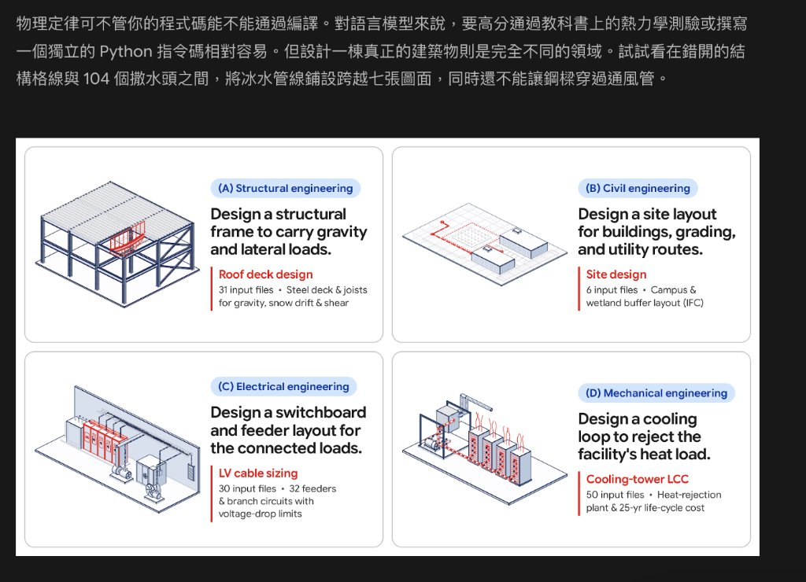

Core Disciplines in Commercial Building Engineering
Modern high-rise construction coordinates structural framing, mechanical ventilation, electrical distribution, and pressurized plumbing pipelines through shared architectural drawings. Early clash detection prevents costly field rework across building cores.

Load-bearing frames transfer lateral wind and seismic forces into deep foundations while dedicated service shafts isolate thermal ducts from high-voltage risers and potable water mains.